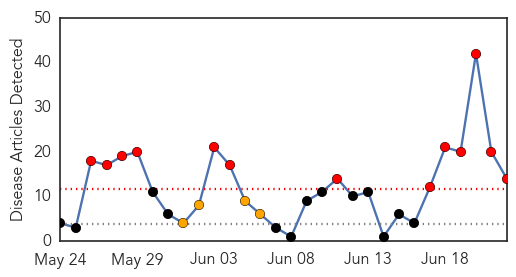
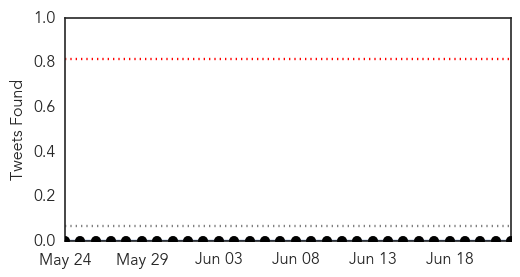

Ebola
30-Day Web Trend
13 alerts, 4 warnings

30-Day Twitter Trend
0 alerts, 0 warnings

Article Locations

Article Confidences

Top Articles:
- 1.000
- 'Most Challenging' Deadly Disease Outbreak: WHO Speaks Out On Ebola Dangers
- 1.000
- Ebola outbreak is 'out of control' in West Africa, says medical expert
- 1.000
- Ebola spread due to 'relaxation' of efforts
- 1.000
- Epidemic: Ebola deaths reach 337 in 3 countries in 'most challenging' outbreak
- 1.000
- 'Ebola virus is totally out of control', medics warn
- 1.000
- Sierra Leone steps up measures to tackle Ebola outbreak
- 0.999
- Ebola virus in West Africa claiming hundreds of lives: Many fear it is now out of control
- 0.999
- What a relief!
- 0.998
- Doctors Without Borders: Ebola in West Africa 'Out of Control'
- 0.997
- Ebola virus kills eighth person in two weeks in Monrovia Liberia
- 0.997
- Ebola 'out of control' as 330 deaths reported
- 0.995
- Ebola outbreak in W.Africa 'totally out of control' , warns MSF
- 0.993
- Massive West African Ebola outbreak ‘now in a second wave’
- 0.570
- CDC: More anthrax exposure possible
Top Tweets:
-
No tweets found for Jun 22, 2014